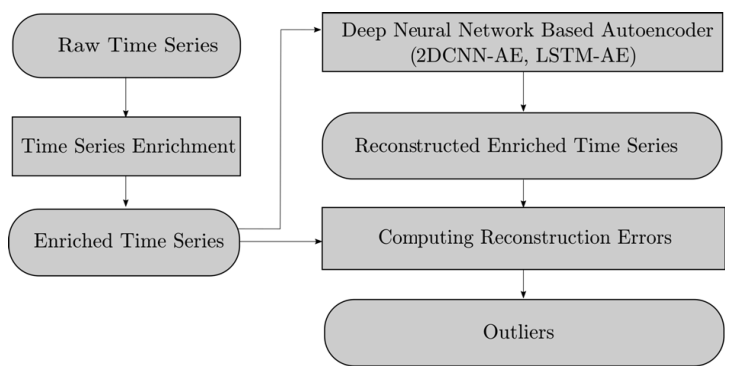
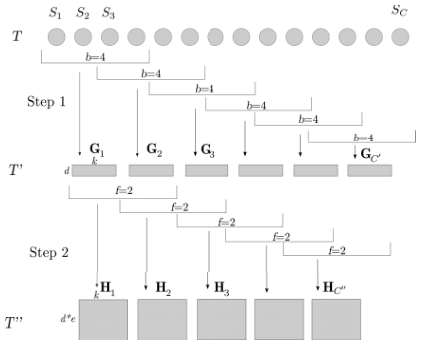
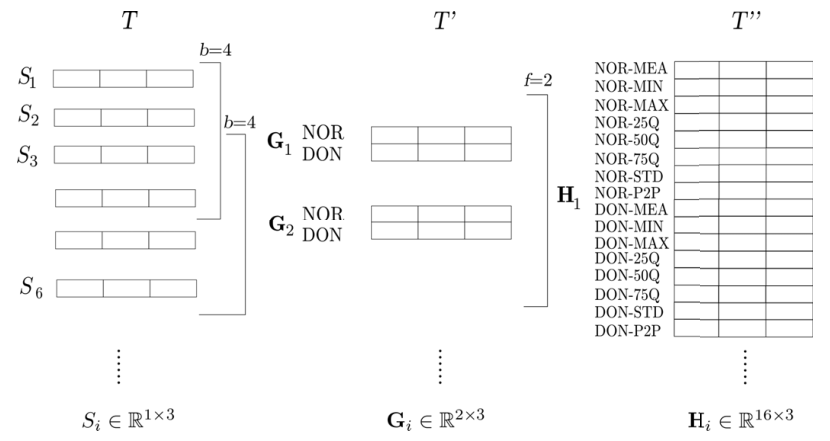
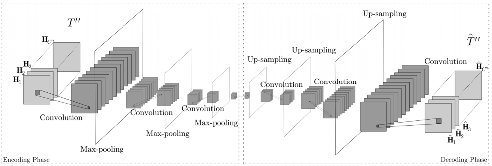
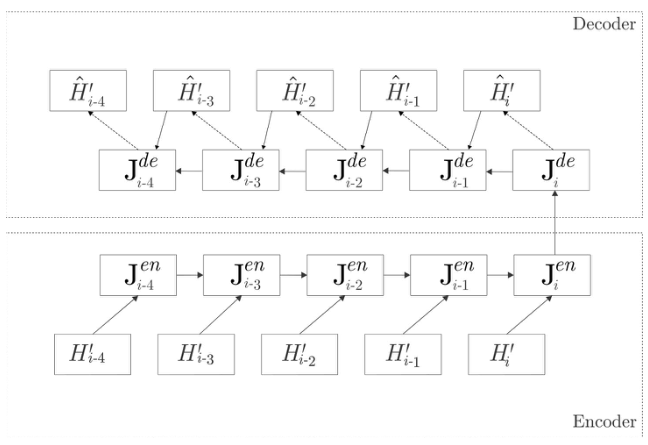
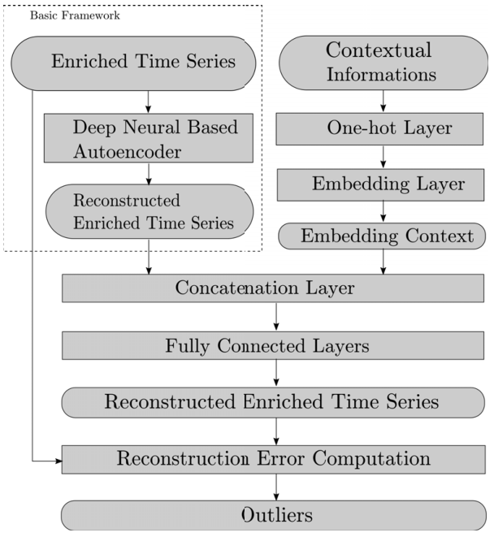

基于DNN的多维时间异常检测
多维时间异常检测方法
论文名称为AE重建特征空间丰富后的时间序列; 作者利用AE对丰富后的特征空间进行降维，基于低维度特征来重建序列, 则重建后的序列是捕捉到代表性特征(异常往往具有非代表性特征). 因此重建前后的偏差(可以理解为异常分数)可以作为异常的时间序列的判定依据. 作者还提出了基于CNN的AE和基于LSTM的AE模型, 以及结合上下文信息到框架中.
1.引入
1.1多维时间序列定义
多维时间序列是一个序列向量, 其中一个向量代表了一个时间点的特殊状态及信息. 定义如下:
1.2问题定义
给定一个k维的\(T = <S_1, S_2, S_3, ...S_i ... S_C>\), 目的在于找到一个\(S_i\)的异常分数，可以通过该异常分数对该序列进行排序，从而是实现对异常序列的判定。
1.3自编码器(AE)
自编码器在异常序列检测中非常适合，目的是通过输出向量来近似输入向量，AE通过对输入序列的特征降维，在低维空间重建输入序列，实现对代表性特征的捕捉。AE主要由2部分组成：编码器(Encoder)和解码器(Decoder):
1.4异常分数
异常分数主要基于重建前后的序列进行计算，如通过Loss函数进行计算：\(E(X,\hat{X})=||X-\hat{X}||_2^2=\sum_{i=1}^{m}{(x_i-\hat{x_i})^2}\), 而在应用时异常分数的取值可以根据训练时的最小E值作为阈值。因此AE可以重构正常的时间学列，对于非正常的时间序列重构的误差较大。因此AE可以对异常序列进行处理。
2.框架
2.1基础框架
下图为基础框架，输入为原始的多维时间序列(被称为Raw Time Series)，输入被一个Time Series Enrichment模块进行扩展，每个维度特征被丰富为一个wide的多维时间序列(被称为Enriched Time Series)。

然后，Enriched Time Series被输入到AE的模型中，作者提出了基于2DCNN-AE和LSTM-AE，输出重建后的Enriched Time Series，再计算异常分数，根据异常分数来判定异常。
2.2Time Series Enrichment模块
通过滑动窗口考虑依赖关系，并生成统计特征。丰富后的特征比原始时间序列有更大的特征空间，能帮助AE识别小空间中更具有代表性的特征。作者通过两个步骤进行：
-
Step-1: 给定一个滑动窗口
b，窗口之间的重叠为\([\frac{b}{2}]\)，因此，对一个长度为\(C\)的序列，生成\(C^"=[\frac{2·C-b}{b}]\)个窗口。示例如下图所示，C=14，窗口设置为4，就得到了\(([t_1, t_4],[t_3,t_6], [t_5, t_8]...)\)，总共得到\(C^"=6\)窗口。
再对于每个窗口每个特征计算其衍生特征，作者定义了2个衍生特征:norm(\(NOR\))和difference of norm(\(DON\))，其中\(NOR\)对于第\(j\)个特征的窗口序列的计算方式为：
- \(nor\)特征主要是计算特征再时间窗口内的大小；
- \(don\)特征是\(nor\)的差异计算，主要计算特征在两个时间窗口上的幅度变换，捕捉时间上的依赖性。
计算概述流程如下图所示，但是值得注意的是特征空间的变化，假设原始序列为\(k=3\)的维度，在经过Step1后变为\(2 \times 3\)的大小。

- Step-2:在Step-1的基础之上，计算\(e\)个统计特征，作者提出了8个统计特征，分布为：均值，最小值，最大值，下四分位数，中位数，上四分位数，标准差和极值。统计特征是分别在\(NOR\)和\(DON\)特征上进行计算，这样特征空间如上图所示，就变为了\(2 \times 8 \times 3\)的大小。
注意：以上计算在时间维度上的长度只是变化了一次，有原始的\(C\)经过窗口参数\(b\)，变为了\(C^"\)。
2.3基于DNN的AE
2.3.1基于二维卷积的AE2DCNN-AE
将二维卷积和AE进行结合，整个模型结构如下图所示。主要使用的卷积，最大池化(作为下采样方法)，上采样。下面主要对输入数据进行说明。输入数据为特征空间丰富后的时间序列数据：

2.3.2基于LSTM的AE：LSTM-AE
LSTM-AE在encoder和decoder两个阶段均使用LSTM，在模型输入时将\(H_i=\R^{(d \times e) \times k}\)进行转换为\(d \times e \times k\)的tensor输入。在进入LSTM-AE时以\(C^"\)的固定长度\(l\)的子序列进行训练，如下图以\(l=5\)的子序列训练。

2.3.4引入上下文信息
有时数值的急剧变化不一定时异常值，比如随外部环境的变化，例如驾驶车辆由于路况的变化，外部车辆的影响；再比如用电由于天气的，断电等情况的变化。因此，在框架中加入上下文信息是非常有价值的。
在时间序列中，非连续数值的一般为类别型特征，因此坐车提出了one-hot编码和embedding层，将离散型的特征加入到框架中，进行合并，再通过全连接层重构序列。整个架构如下图所示：

3.效果评估
作者使用了2个传统的算法(OC-SVM，LOF)，原始序列的LSTM-AE，2DCNN-AE，LSTM-AE和LSTM-AE-ADV，并使用了3个数据集进行了评估，总体而言LSTM-AE-ADV效果最好，当然在不同的数据集上效果有一些差异。
4.总结
- 整体思路还是基于AE算法进行异常检测模式，但是作者对原始多维时间序列进行了人工特征提取(2范数，范数差，统计特征)，并结合AE框架进行异常检测。
- 作者将传统机器学习和深度学习进行了结合：(1).特征空间丰富模块；(2).引入上下文信息部分
- 在引入上下文信息时，可以视为通过一些条件对AE重构的结果进行修正，加入非时间序列的特征，经过回归输出重构结果。
- 作者未提出如何对异常分数的阈值定义。